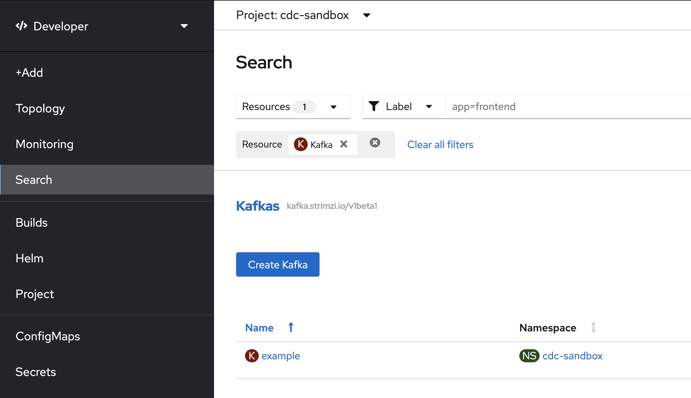

Demo Walkthrough: Strimzi and AMQStreams Operator
Strimzi and AMQStreams Operator
-
Go to the
cdc-sandboxproject, Developer Perspective -
Click on
+AddselectDeveloper Catalogand then start searching forkafkain the "Operator Backed" items -
A page will show up, just click
Create -
Show some of the options (perhaps even "YAML View") briefly, but create a kafka using the defaults, setting name to
examplethen scrolling down and clickingCreate -
The Kafka cluster will start to appear in the Topology View
-
Next use the search functionality to search for the
Kafkacustom resource you just created
-
Click on
exampleand scroll to the bottom to review theConditions. Wait until this is set toReady -
Finally, navigate back to the topology view to see all the aspects that were created. Point out
-
Example Zookeeper
-
Example Kakfa (Brokers, see Services)
-